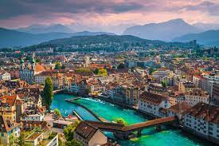

Imagens de Blausee, localizado na Suíça, é um lago de uma beleza surpreendente, conhecido por suas águas azul-turquesa e ambiente tranquilo.
|

Imagens de Lucerna, à beira do Lago dos Quatro Cantões, encanta com sua Ponte da Capela e ambiente histórico, combinando beleza natural e cultura.
|
Imagens de Zermatt, no sul da Suíça, revelam uma cidade turística de montanha famosa por suas oportunidades de esqui, escalada e trilhas.
|